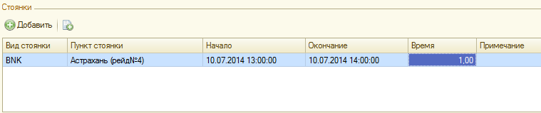
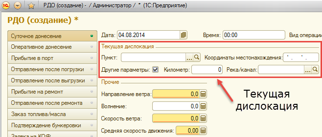

Донесения диспетчеру (РДО) формируются по данным путевого журнала с дозаполнением прочих параметров.
Для ввода новой радиограммы необходимо выбрать команду «РДО» в меню «Создать».
Рисунок 12. Ввод нового донесения
Откроется форма нового РДО. После открытия формы нового РДО, необходимо указать его вид (шаблон РДО, см. рис. 13). В случае, если выбраны данные о прибытии или отправлении из порта, система автоматически при выборе шаблона РДО найдет последнюю такую операцию и проставит ее на форму. После выбора шаблона на форме отразятся все необходимые реквизиты РДО. Для каждого шаблона набор реквизитов разный, но есть обязательные и необязательные реквизиты.
Рисунок 13. Примерная форма РДО
Если пункт обработки на момент подачи РДО не известен, в значение поля выбирается предопределенный элемент справочника – «Пункт назначения».
Если выбирается суточное донесение или оперативное донесение, необходимо указать дату подачи РДО и нажать кнопку «Заполнить».
Программа автоматически заполнит вид операции на дату РДО и заполнит все имеющие данные по стоянкам (рис.14)

Рисунок 14. Данные по стоянкам
Остальные данные, обязательные для заполнения будут отмечены специальным оформлением, как на рис. 15.
Рисунок 15. Оформление обязательных к заполнению полей
При мере заполнения параметров РДО система будет автоматически формировать текст радиограммы, который впоследствии будет отправлен диспетчеру.
Рисунок 16. Текст радиограммы
При подаче РДО система позволяет указать текущую дислокацию как пунктом следования, так и координатами местонахождения (необходимо поставить флажок «Другие параметры»). При указании дислокации судна на реке система будет контролировать заполнение путевого журнала. Нельзя указать местонахождение в пункте, если не указаны все контрольные пункты по приказу.

Рисунок 17. Указание текущей дислокации в РДО
После заполнения всех обязательных параметров, необходимо нажать кнопку «Отправить».
Рисунок 18. Отправка РДО
Результат отправки РДО, можно увидеть на экране в виде значка (рис. 19, 20)
Рисунок 19. Успешная отправка РДО
Рисунок 20. Неуспешная отправка РДО
При успешной отправке РДО попадает на FTP-сервер для последующей загрузки в учетную систему службы эксплуатации флота и копирования в центральную БД судового модуля. При неуспешной отправке система позволяет сохранить текст РДО в файл и отправить его электронной почтой. Для сохранения файла РДО необходимо нажать кнопку «Сохранить в файл» и выбрать расположение сохраняемого файла.
Рисунок 21. Сохранение РДО в файл
Также сформированный текст РДО можно просто скопировать в нужное место в текстовом формате.
Имеется возможность распечатать текст РДО на принтер. Для этого необходимо при открытом РДО выбрать команду Печать в заголовке окна. Откроется окна выбора принтера.
Рисунок 22. Сохранение РДО в файл
После первичной отправки происходит запись документа «РДО» и закрывает возможность редактирования даты и вида операции. После успешной отправки РДО закрывается на редактирование полностью.
После завершения работы с РДО можно нажать кнопку «Закрыть». При этом, если были изменены какие-либо данные система предложит сохранить РДО.
Рисунок 23. Закрытие РДО
По мере прохождения рейса, необходимо заполнить остальные данные по рейсу (осадка, загрузка), а перед созданием рейсового отчета заполнить различные параметры работы судна, для вывода их в отчет.